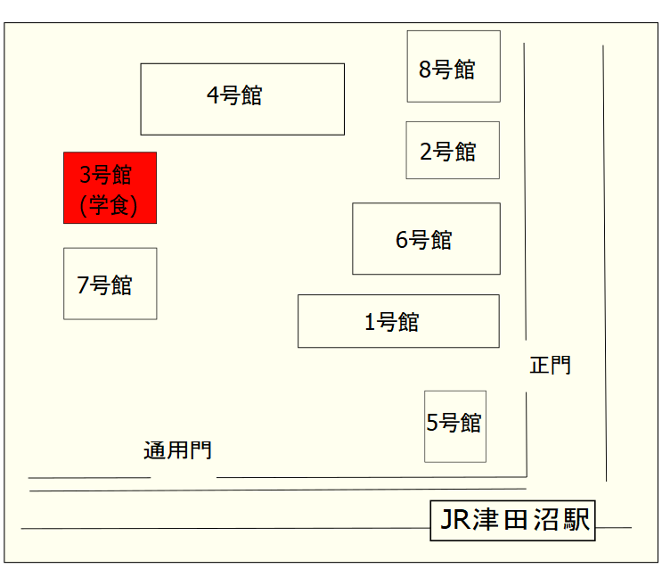

■津田沼キャンパス


津田沼キャンパスは
JR総武線 津田沼駅 南口から徒歩1分
京成線 京成津田沼駅から徒歩15分
新京成線 新津田沼駅から徒歩3分
のところに位置します。学生食堂は津田沼キャンパス内、3号館になります。
所在地 : 〒275-0016 千葉県習志野市津田沼2-17-1
TEL : 047-475-2111
津田沼キャンパスは
JR総武線 津田沼駅 南口から徒歩1分
京成線 京成津田沼駅から徒歩15分
新京成線 新津田沼駅から徒歩3分
のところに位置します。学生食堂は津田沼キャンパス内、3号館になります。
所在地 : 〒275-0016 千葉県習志野市津田沼2-17-1
TEL : 047-475-2111
新習志野キャンパス(画像左参照)は
JRk京葉線 新習志野駅 南口から徒歩6分
JR総武線 津田沼駅 南口から下車し、京成バス「新習志野駅行」で「千葉工業大学(乗車時間 約15分)」下車
に位置します。学生食堂は新習志野キャンパス内、12号館奥の食堂棟になります(画像右参照)。
所在地 : 〒275-0023 千葉県習志野市芝園2-1-1
TEL : 047-454-9754